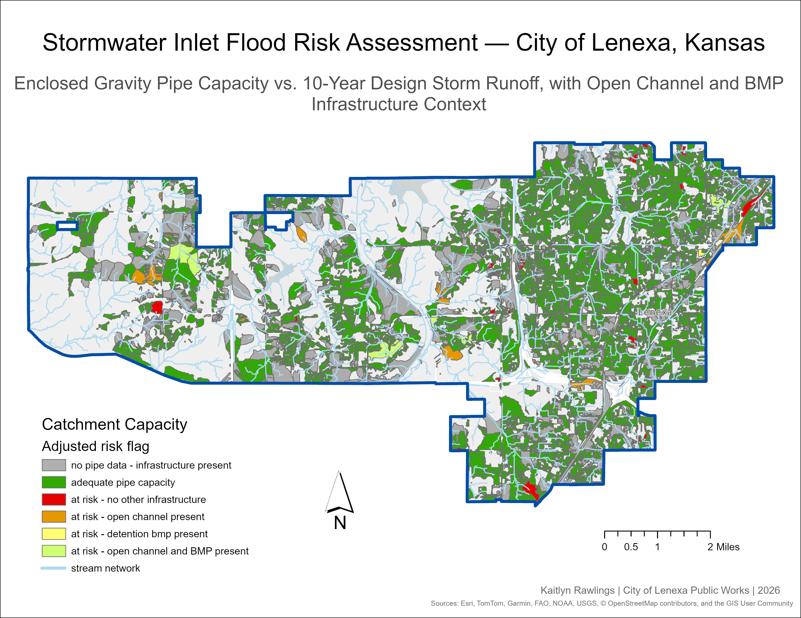
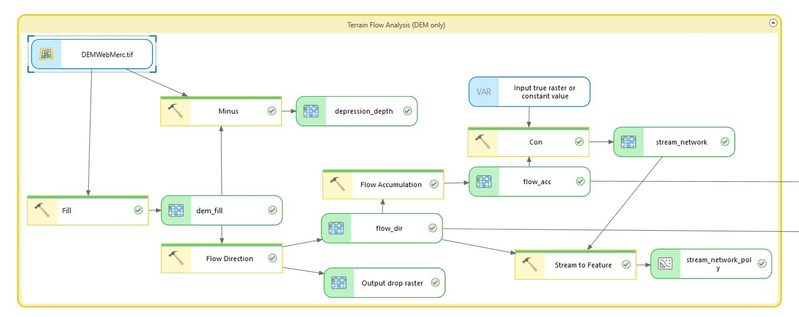
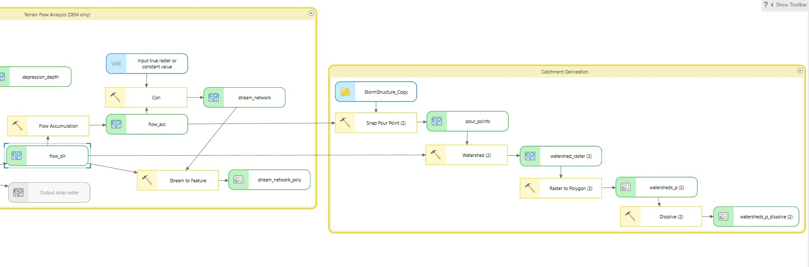
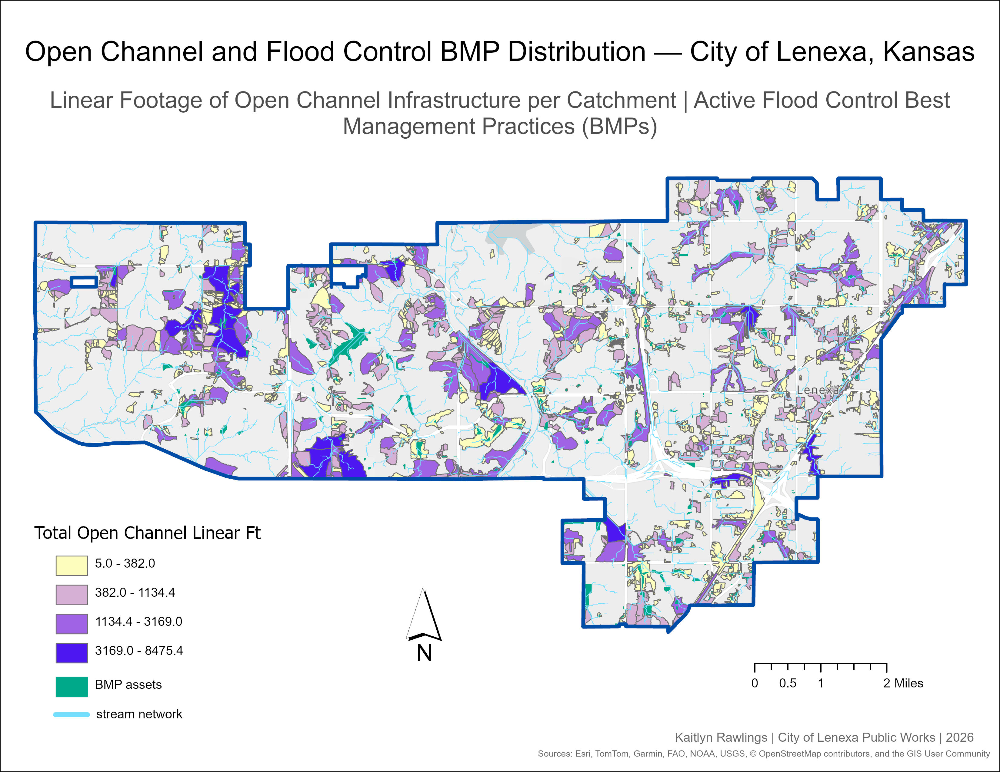

Spatial Analysis · City of Lenexa, KS · April 2026
Citywide Stormwater Catchment Delineation
& Pipe Capacity Analysis

Project Overview
This project delineates stormwater catchment areas and examines citywide pipe capacity across the City of Lenexa, Kansas. Using a 1-meter resolution DEM and the D8 flow routing algorithm (O'Callaghan & Mark, 1984), terrain analysis characterizes surface flow direction and accumulation, which are used to delineate 15,615 catchment polygons from storm inlet structure locations.
A custom Python script conducts a pipe capacity analysis for each catchment using City of Lenexa conduit data and Manning's equation (Chaudhry, 2008; ASCE, 1992). A second script estimates runoff volume per catchment using NRCS curve numbers derived from NLCD land cover (U.S. Geological Survey, 2024) and SSURGO hydrologic soil groups (USDA NRCS, n.d.), applying the NRCS TR-55 method (USDA NRCS, 1986) with a 10-year 24-hour design storm depth of 5.50 inches (Perica et al., 2013). Catchments where runoff exceeds pipe capacity are identified as potential flood risk locations. Open channel drainage features and flood control detention facilities present within each catchment are also inventoried to provide broader infrastructure context.
The analysis was conducted in four phases, automated in ArcGIS Pro Model Builder. Phases 3 and 4 (catchment_capacity.py and catchment_runoff.py) are implemented as standalone Python scripts run after the ModelBuilder outputs are complete.
Key Output
15,615 catchment polygons · 5,222 pipe-assessed catchments · 98.7% adequate capacity · 33 high-priority at-risk locations identified
Data Sources
1-meter resolution DEM · City of Lenexa Lucity Storm Structures & Conduits · BMP Assets · USA Annual NLCD 2024 · USDA SSURGO · NOAA Atlas 14 (5.50 in, 10-yr 24-hr)
Skills Demonstrated
DEM Terrain Analysis · Catchment Delineation · ArcGIS ModelBuilder · Python / arcpy · Manning's Equation · NRCS TR-55 · Stormwater GIS · Infrastructure Analysis
Workflow
Four-Phase Analysis
Phase 1
Terrain Flow Analysis
The project began with a terrain flow analysis to establish how water moves across the landscape, providing the foundation for downstream catchment delineation. The 1-meter DEM was first processed through the Fill tool to create a hydrologically conditioned surface by removing artificial sinks that would otherwise interrupt flow paths. The Flow Direction tool then applied the D8 algorithm, routing each cell to its steepest downslope neighbor (O'Callaghan & Mark, 1984), and the Flow Accumulation tool used these results to identify which cells receive the most upstream drainage. The stream network was extracted where flow accumulation exceeded 100,000 cells and converted to a vector polyline for visualization. A depression depth raster was also generated by subtracting the original DEM from the filled surface, illustrating locations where surface ponding is likely to occur.


Phase 2
Catchment Delineation
For catchment delineation, storm inlet structures served as pour points, which are the locations where surface runoff converges and enters the pipe system. A definition query filtered the storm structure layer to inlet types only (Inlet, Junction Box, Pipe Inlet), which are the structure types with connected enclosed gravity pipes, excluding outfalls, virtual structures, and other non-inlet types that do not receive surface runoff. The Snap Pour Point tool moved each inlet to the nearest high-accumulation cell within 15 meters to account for potential spatial offsets between the structure location and the DEM. Using these snapped pour points alongside the flow direction raster from Phase 1, the Watershed tool delineated the contributing drainage area for each inlet. The Raster to Polygon tool converted the resulting watershed raster to vector polygons, and the Dissolve tool merged fragmented polygons by gridcode, which corresponds to the inlet structure number, producing a final dataset of 15,615 catchment polygons.
Phase 3
Pipe Capacity Analysis
To determine pipe capacity for each catchment, a custom Python script (catchment_capacity.py) was developed to apply Manning's equation (Chaudhry, 2008; ASCE, 1992) to the City of Lenexa storm conduits layer alongside the catchment polygons produced in Phase 2. Manning's equation calculates the maximum flow rate (volume/time) of water a pipe can carry when completely full:
Q = (1/n) · A · R2/3 · S1/2
Q = flow rate (volume per unit time)
n = Manning's roughness coefficient
A = cross-sectional area when full
R = hydraulic radius (diameter ÷ 4 for full circular pipe)
S = pipe slope (rise over run)
For each catchment polygon the script located the inlet structure via gridcode, retrieved all enclosed gravity pipes connected to that structure as upstream or downstream nodes (CNG_TYPE_CD = 1), calculated Manning's capacity for each connected pipe, and summed results to write capacity fields to the watershed output. Where pipe slope data was null (approximately 85% of records) a default slope of 1.0% was applied per City of Lenexa stormwater design standards. Pipes with null or zero diameter values were excluded from the capacity calculation entirely. Total capacity (TOTAL_CAP_AF) was summed across all connected pipes per inlet and normalized by catchment area to produce a capacity-per-acre metric (CAP_PER_ACRE).
Phase 4
Runoff & Risk Assessment
To estimate runoff volume and identify at-risk catchments, a second custom Python script (catchment_runoff.py) was developed using the NRCS TR-55 method (USDA NRCS, 1986). The script first constructed a curve number (CN) raster by combining NLCD land cover data with SSURGO hydrologic soil groups and applying the TR-55 curve number lookup table. Curve numbers represent the runoff potential of a land surface based on its cover type and soil characteristics — higher values indicate less ground absorption and greater runoff potential, while lower values indicate more infiltration. The area-weighted average CN per catchment was then calculated using Zonal Statistics.
Q = (P − 0.2S)² / (P + 0.8S) where S = (1000/CN) − 10
Q = runoff depth (inches)
P = rainfall depth (inches)
S = potential maximum soil retention after runoff begins
CN = curve number
For each catchment polygon the script calculated the area-weighted average CN, applied the TR-55 equation to estimate runoff depth, converted runoff depth to volume in acre-feet using catchment area, compared runoff volume to total pipe capacity (TOTAL_CAP_AF), and flagged catchments where runoff exceeded capacity as at-risk (RISK_FLAG = 1). An adjusted risk flag (RISK_FLAG_ADJ) was then performed using a spatial intersect of open channel drainage features and flood control detention facilities against catchment polygons to account for additional stormwater infrastructure present in at-risk catchments. The capacity deficit (CAP_DEFICIT_AF) represents the volume of runoff exceeding pipe capacity during the design storm event.

Maps & Results
Four maps were produced to visualize the results of this analysis. Together they tell a complete story of the City of Lenexa's stormwater infrastructure: from land surface runoff potential to flood control infrastructure distribution, to where flood risk exists and how severe it is.

Map 1 — NRCS Curve Number Distribution. This map displays NRCS curve number runoff potential across the City of Lenexa at 30-meter resolution based on a combination of NLCD land cover and SSURGO hydrologic soil groups. The color scale ranges from red to green, where higher curve numbers indicating greater runoff potential are shown in red, and lower curve numbers indicating greater infiltration are shown in green. The eastern portion of the city is heavily developed, while the southern portion contains more industrial land use with extensive concrete and pavement, reflected in the deeper red values. Lower curve numbers appear along the stream corridors, where natural vegetation and permeable soils reduce runoff potential.

Map 2 — Open Channel & Flood Control BMP Distribution. This map displays the City of Lenexa's open channel stormwater conduits and flood control Best Management Practices (BMPs) to provide broader infrastructure context beyond the enclosed gravity pipe network. Because Manning's equation applies only to closed circular pipes, the pipe capacity analysis alone does not account for the ditches, swales, stream channels, and detention facilities that also move and store stormwater across the city. Catchments are symbolized by total open channel linear footage using a graduated color ramp from yellow to violet. A total of 1,981 catchments contain open channel footage and 558 catchments intersect a flood control BMP. The BMP distribution reflects Lenexa's development timeline, with newer western subdivisions more likely to have engineered detention while older eastern neighborhoods rely more heavily on the pipe network.
Map 3 — Flood Risk Assessment. This map displays the adjusted flood risk assessment across the City of Lenexa's stormwater catchment areas for a 10-year 24-hour design storm event. Of the 5,222 catchments with pipe data, 5,156 (98.7%) show adequate pipe capacity, reflecting Lenexa's well-maintained stormwater infrastructure. The remaining 66 catchments (1.3%) were flagged as at-risk, of which only 33 have no supplemental open channel or BMP infrastructure present. Adequate catchments are shown in green, at-risk catchments with no supplemental infrastructure in red, orange where open channel drainage is present, yellow where a flood control BMP is present, and light yellow where both are present. Gray catchments have no pipe data but contain open channel or BMP infrastructure.

Map 4 — Capacity Deficit Severity. This map displays the pipe capacity deficit severity for the 33 catchments identified as at-risk with no supplemental open channel or BMP infrastructure present — the highest priority locations for further investigation. Catchments are symbolized on a graduated color ramp from light yellow to dark red based on the volume of runoff exceeding full-flow pipe capacity during the design storm, expressed in acre-feet. Deficits range from 0.002 to 49.5 acre-feet with a median of 0.54 acre-feet. The most severe deficits appear in the flat western portions of the city, which is likely influenced by D8 flow routing producing unrealistically large catchment areas on low-gradient terrain. These locations should be field verified before any infrastructure conclusions are drawn.
Conclusion
Findings
This analysis provides a citywide baseline assessment of stormwater infrastructure capacity across the City of Lenexa, Kansas. Of the 15,615 catchments delineated from storm inlet structures, 5,222 had sufficient pipe attribution to be assessed, and 98.7% of those showed adequate enclosed gravity pipe capacity for the 10-year 24-hour design storm. This result reflects Lenexa's well-maintained and consistently upgraded stormwater system.
The 66 catchments flagged as at-risk by the pipe model represent a small but meaningful subset requiring further attention. Importantly, the adjusted risk assessment reduces this to 33 catchments with no supplemental open channel or BMP infrastructure present — locations where the model identifies a pipe capacity deficit and no additional drainage features exist in the data to suggest the risk may be mitigated. These are the highest priority locations for field verification.
The open channel and BMP distribution map reveals that much of Lenexa's flood control capacity lies outside the enclosed pipe network. The concentration of detention facilities in the western and central portions of the city reflects the stormwater management requirements imposed on newer development, while older eastern neighborhoods rely more heavily on the pipe system alone. This distinction is important context for interpreting the risk results, as catchments flagged as at-risk in infrastructure-rich areas are likely better protected than the pipe model alone suggests.
Taken together, these four maps do not paint a picture of a city with a stormwater crisis. They identify a small number of locations that warrant investigation, characterize where supplemental infrastructure exists, and establish a data-driven foundation for prioritizing future capacity assessments and infrastructure planning decisions.
Limitations
Known Constraints
D8 Flow Routing Algorithm
The D8 algorithm routes each DEM cell to its steepest downslope neighbor. In low-gradient areas where elevation differences are negligible, the algorithm assigns flow direction arbitrarily, which can cause flow paths to meander across large areas and produce unrealistically large catchment polygons. Because Lenexa has relatively flat terrain, particularly in the western half, this artifact is present throughout the model output. Catchments were filtered to a shape area under 500,000 m² for all map displays to partially mitigate this, though deficit values in flat western areas should be interpreted with caution.
Manning's Equation
Manning's equation calculates the maximum flow rate a pipe can carry assuming it is flowing at complete capacity and free of any blockages. In practice, pipes rarely operate at full capacity — partial blockages, sediment buildup, joint deterioration, or aging infrastructure can all reduce actual flow capacity below the modeled value. The capacity values in this analysis likely represent an optimistic upper bound, and at-risk catchments may reflect conditions that are worse in the field than the numbers suggest.
Incomplete Pipe Attribute Data
Approximately 85% of enclosed gravity pipes had null slope values in the Lucity asset management database and were assigned a 1.0% default slope per City of Lenexa stormwater design standards. Additionally, approximately 2,260 enclosed gravity pipes (14% of the total) had null or zero diameter values and were excluded from the capacity calculation entirely, meaning the model may be undercounting at-risk locations.
NOAA Atlas 14 Point Estimate
The 10-year 24-hour rainfall depth of 5.50 inches is a single point estimate for the city and does not account for spatial variation in rainfall intensity. A storm event of this magnitude would not deposit uniform rainfall across the entire city simultaneously.
Inlet-Only Pour Point Delineation
Catchment delineation is based solely on storm inlet structures as pour points. Open channel features and BMP detention facilities were not used as pour points, meaning any runoff draining to a ditch, swale, or detention basin gets absorbed into the nearest inlet catchment based on terrain flow routing, which may not reflect how water actually moves through the drainage network in the field.
Open Channel & BMP Capacity Not Computed
While open channel drainage features and BMP detention facilities are inventoried in this model, their hydraulic capacity was not computed. Cross-section geometry for ditches and swales cannot be validated without field survey data, and BMP storage volume and stage-storage curves are not available in Lucity. Both infrastructure types are therefore treated as qualitative context rather than quantitative capacity inputs.
SSURGO Hydrologic Soil Data
The SSURGO hydrologic soil data raster had no defined NoData value in the source file. Cells with a pixel value of 0 and cells falling outside of SSURGO's spatial coverage were assigned hydrologic soil Group C as a default value. Approximately 40% of catchments in the western portion of the city were affected by this gap in SSURGO coverage.
Tools & Technologies
Resources
Tools Used
ArcGIS Pro Model Builder · Python / arcpy · ArcGIS Spatial Analyst · CentralSquare / Lucity · NOAA Atlas 14 · NLCD · SSURGO · Claude (Anthropic)
Scripts & Repository
Both Python scripts have been generalized for reuse and are available on GitHub. Field names, design storm parameters, Manning's n values, and BMP type codes are all configurable in a single block at the top of each script, making them adaptable to any municipality with GIS infrastructure data and a high-resolution DEM.
View on GitHubAcknowledgments
Python scripts (catchment_capacity.py and catchment_runoff.py) were developed collaboratively with Claude, an AI assistant by Anthropic (claude.ai, 2026). Claude assisted with script development, debugging, Manning's equation implementation, NRCS TR-55 methodology, and portions of this documentation. All analytical decisions, parameter selection, data interpretation, and results were reviewed and validated by the author. The author thanks Ted Semadeni, Lenexa Storm Water Superintendent, for guidance on local stormwater design standards.
References
- American Society of Civil Engineers (ASCE). (1992). Design and Construction of Urban Stormwater Management Systems. ASCE Manuals of Engineering Practice No. 77.
- Anthropic. (2026). Claude [AI language model]. https://claude.ai
- Chaudhry, M. H. (2008). Open-Channel Hydraulics (2nd ed.). Springer.
- O'Callaghan, J. F., & Mark, D. M. (1984). The extraction of drainage networks from digital elevation data. Computer Vision, Graphics, and Image Processing, 28(3), 323–344.
- Perica, S., et al. (2013). NOAA Atlas 14: Precipitation-Frequency Atlas of the United States, Volume 8. NOAA, National Weather Service.
- U.S. Geological Survey. (2024). National Land Cover Database (NLCD) Annual Land Cover. MRLC.
- USDA Natural Resources Conservation Service. (1986). Urban Hydrology for Small Watersheds, TR-55 (2nd ed.).
- USDA Natural Resources Conservation Service. (n.d.). Web Soil Survey — SSURGO. https://websoilsurvey.nrcs.usda.gov/